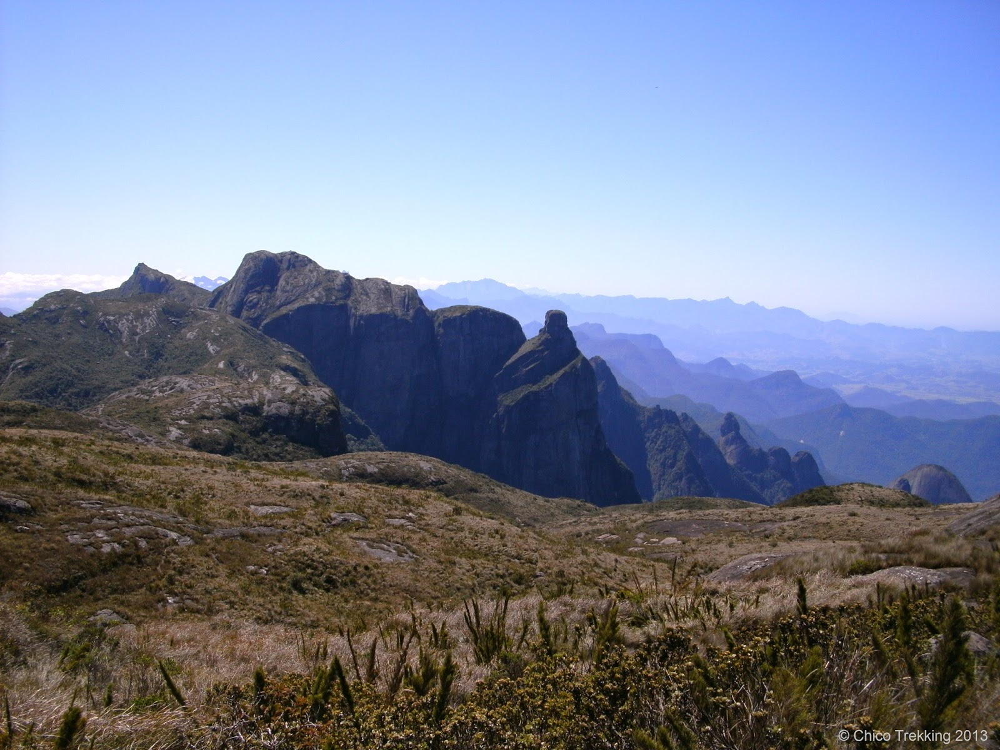
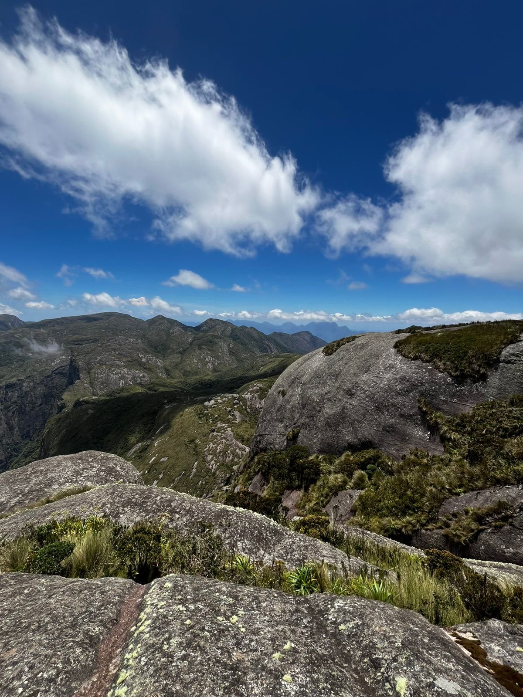
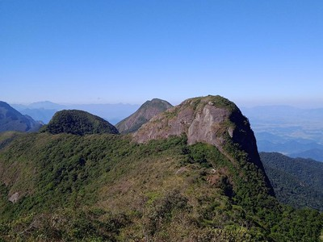

Bonfim → Castelos do Açu
O primeiro dia parte da sede Petrópolis, no bairro do Bonfim, e segue até a região dos Castelos do Açu.
Uma das travessias de montanha mais conhecidas do Rio de Janeiro, atravessando a parte alta do Parque Nacional da Serra dos Órgãos.
A travessia percorre aproximadamente 30 km pela Serra dos Órgãos e conecta as sedes de Petrópolis e Teresópolis do parque.
O percurso passa por áreas de montanha, campos de altitude e formações rochosas, incluindo os Castelos do Açu e a Pedra do Sino.
A travessia conecta as sedes de Petrópolis e Teresópolis do Parque Nacional da Serra dos Órgãos.
O primeiro dia parte da sede Petrópolis, no bairro do Bonfim, e segue até a região dos Castelos do Açu.
O trecho central percorre a parte alta da Serra dos Órgãos, com campos de altitude e formações rochosas.
A etapa final segue em direção à sede Teresópolis, descendo pela trilha da Pedra do Sino.
Conheça algumas das paisagens e formações rochosas encontradas ao longo do percurso.



A travessia exige preparo físico, planejamento e equipamento adequado. Consulte sempre as condições e regras atualizadas do Parque Nacional da Serra dos Órgãos antes da visita.